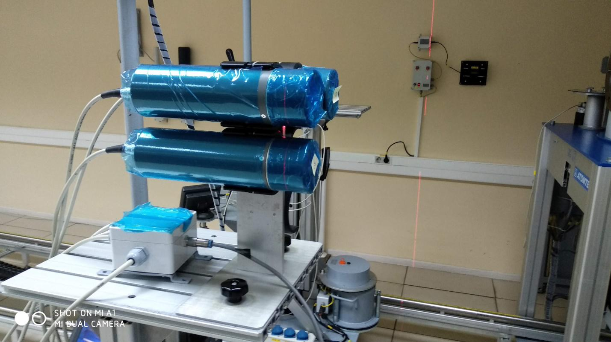
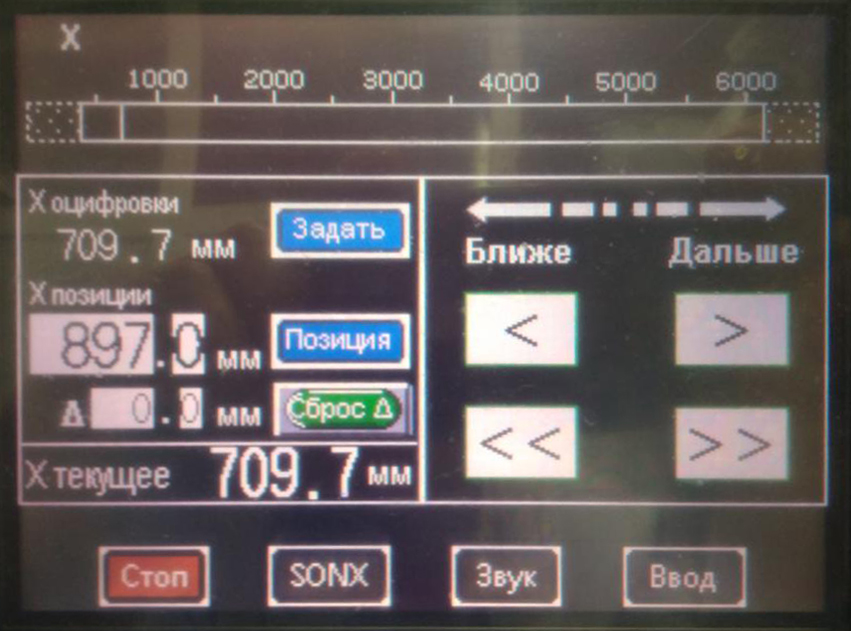
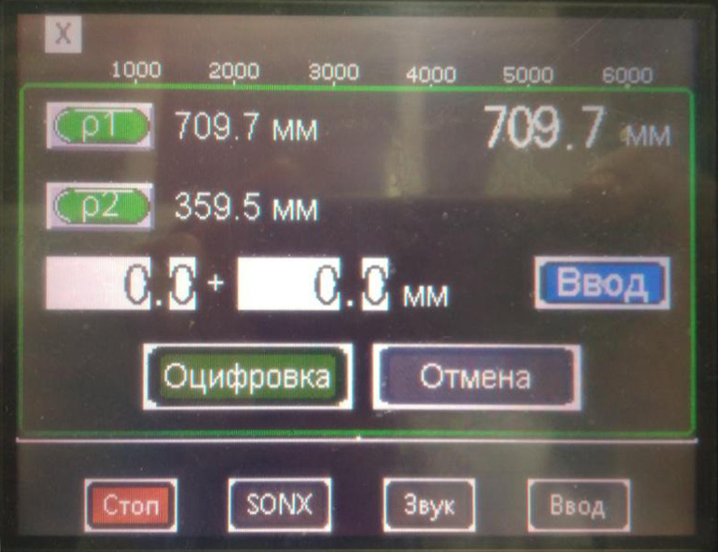
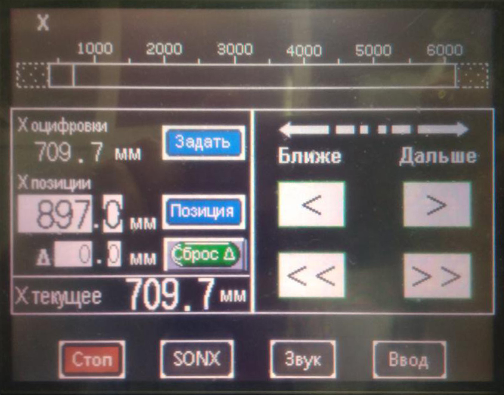
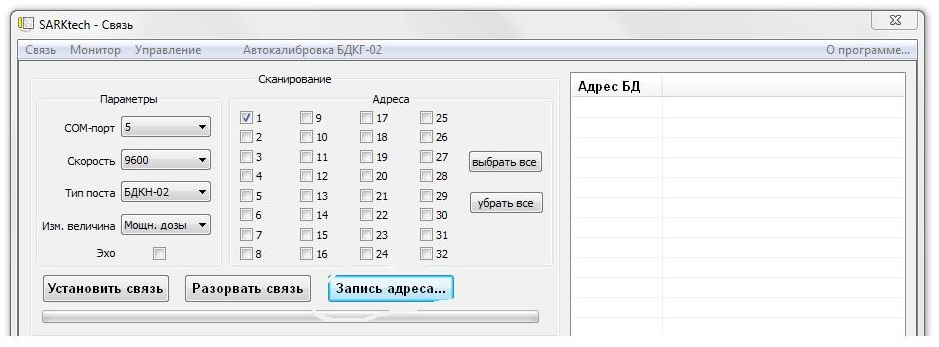
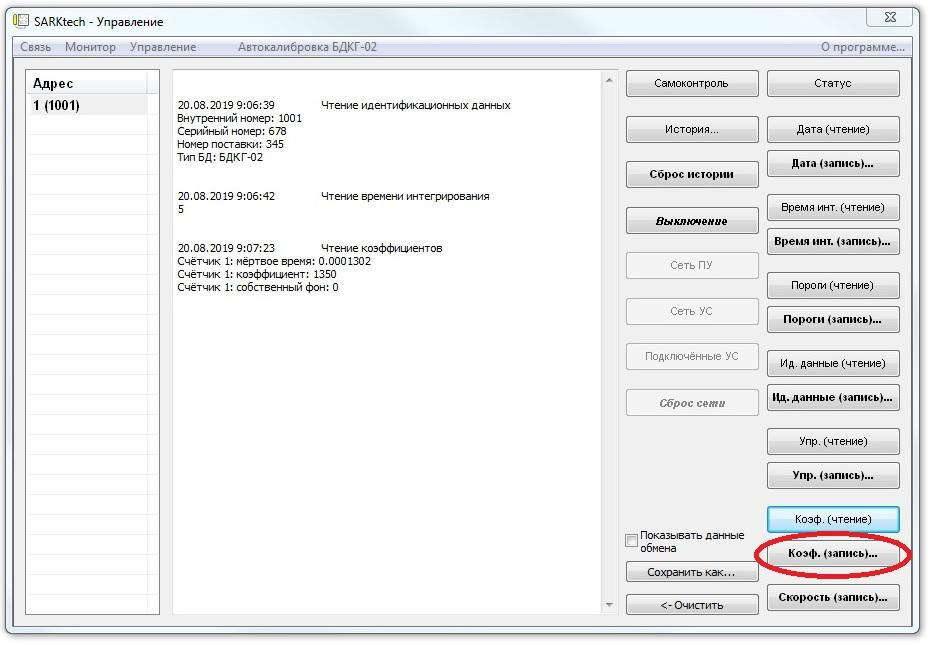
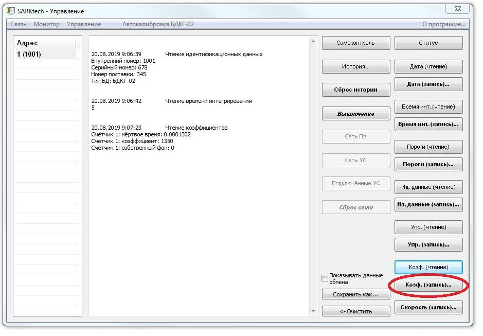
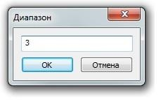
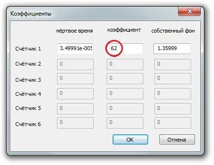
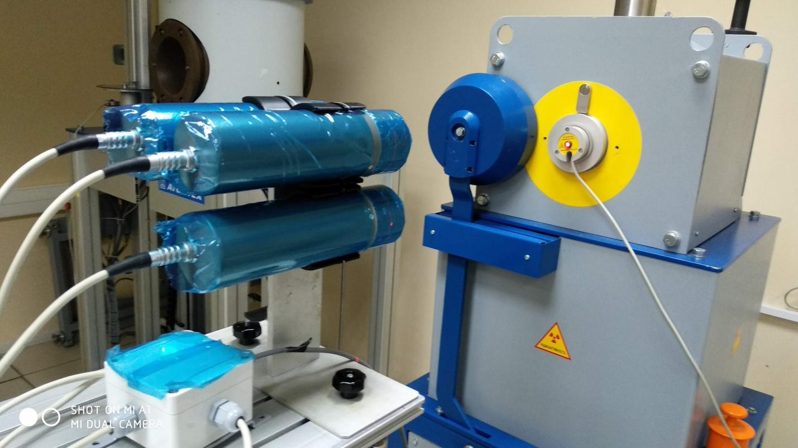

↑
Градуировка БДКГ-204
Энергетика
- Установить 4 блока детектирования на УДГ-АТ110 таким образом, чтобы они расположились параллельно оси
излучения, а расстояние от источника до центра детектора было выставлено -20мм от края колпачка блоков
Фото без корпусов на УДГ-АТ110

- На пульте управления КС-АТ110 нажать ЗАДАТЬ оцифровку в окне Х оцифровки

- Далее нажать Р1 и ОЦИФРОВКА

- Подключить к ПК
- Запустить ПО SARKTECH
- Выбрать скорость подключения 9600
- Адреса и тип БД
- Нажать Поиск
- Перейти во вкладку Монитор
- Установить источники 137Cs 7мкЗв/ч
- Во вкладке управления выбрать коэффициент запись 1диапазон
- Во вкладке управления выбрать коэффициент запись 1диапазон
- Скорректировать показания при помощи коэффициента чувствительности
- Установить 241Am 1м 57Co 0,5мкЗв/ч 60Co 10мк
- Данные записать в журнал градуировок
- Установить 4 блока детектирования на УДГ-АТ130 таким образом, чтобы они расположились параллельно оси
излучения, а расстояние от источника до центра детектора было выставлено -20мм
от края колпачка блоков
Фото без корпусов на УДГ-АТ130
- На пульте управления КС-АТ130 нажать ЗАДАТЬ оцифровку в окне Х
оцифровки

- Далее нажать Р1 и ОЦИФРОВКА
- Подключить к ПК
- Запустить ПО SARKTECH
- Выбрать скорость подключения 9600
- Адреса и тип БД

- Нажать Поиск
- Установить источники 137Cs 7мЗв/ч
- Во вкладке управления выбрать коэффициент запись 2 диапазон

- Скорректировать показания при помощи коэффициента чувствительности
- Установить источники 137Cs 700мЗв/ч
- Во вкладке управления выбрать коэффициент запись 3 диапазон



- Установить источники 137Cs 7Зв/ч и 10 Зв/ч
- При необходимости скорректировать показания при помощи коэффициента чувствительности 3 диапазона при
этом
- поправку показаний вносить с учётом точки 700 мЗв/ч.
- Снять ПСИ


- 700 мкЗв/ч, 7 м, 70м 700 мЗв/ч, 7 Зв и 10 Зв/ч
- Данные переписать в журнал градуировки